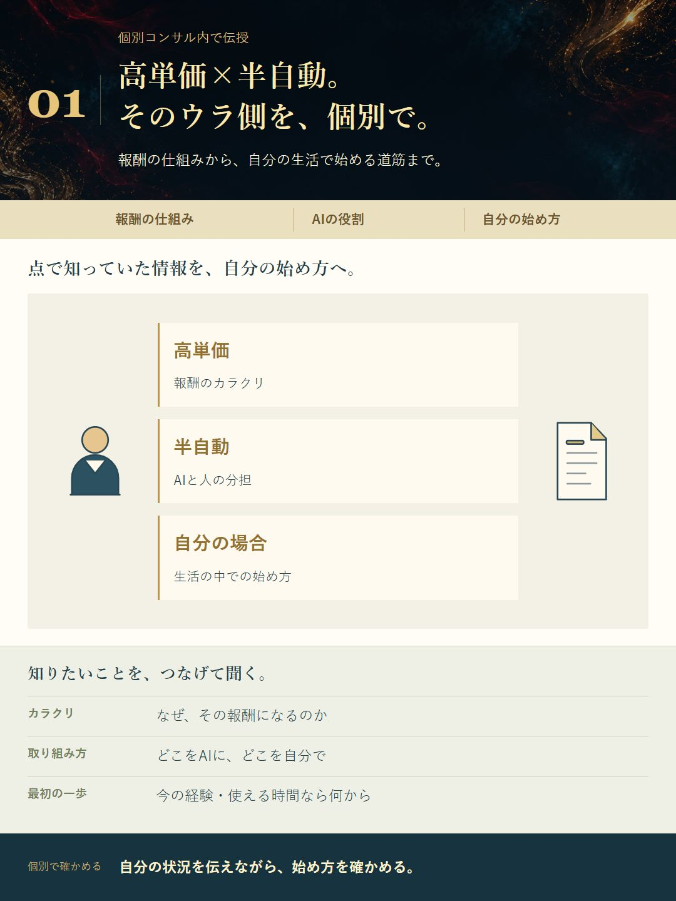
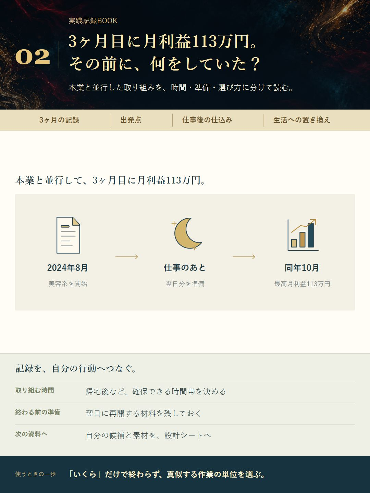
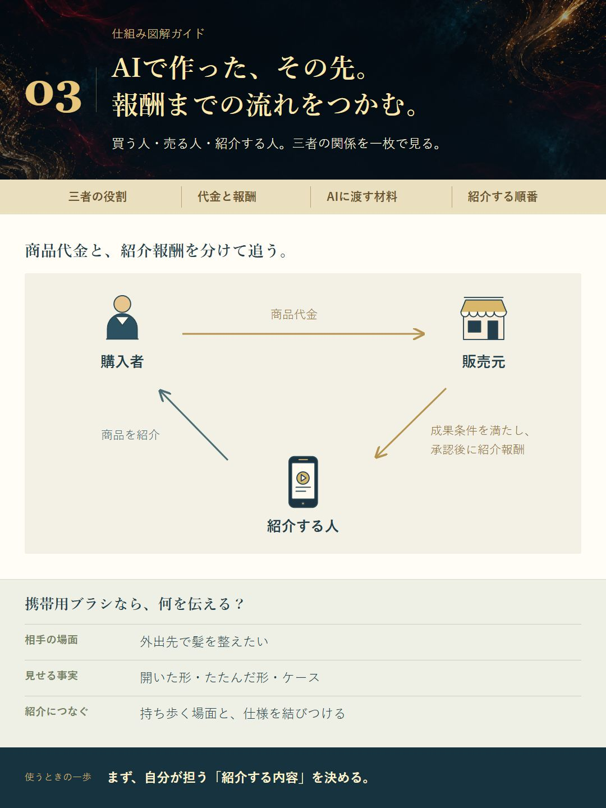
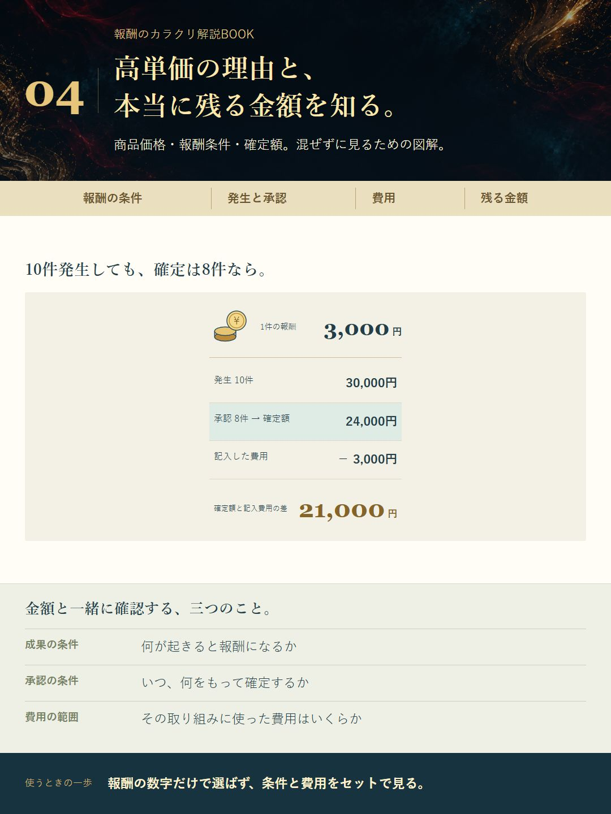
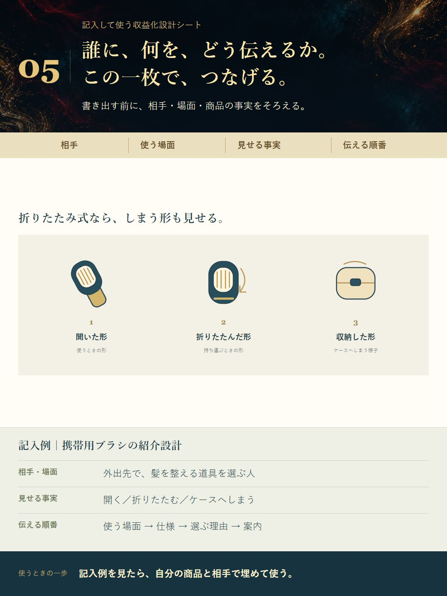
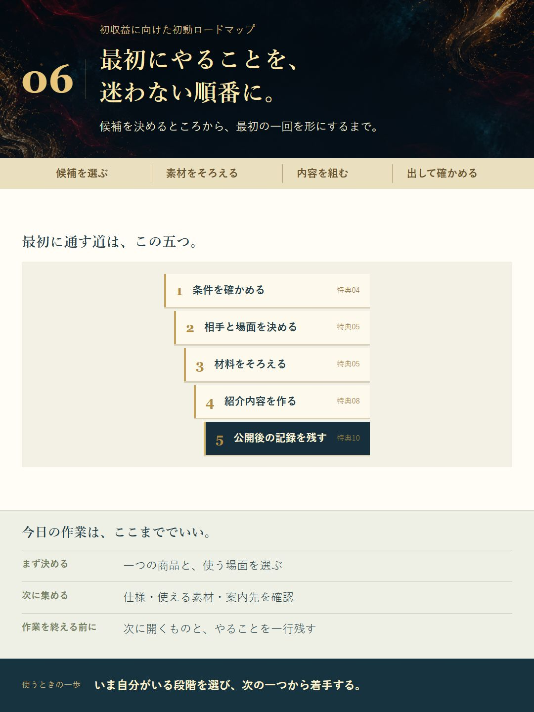
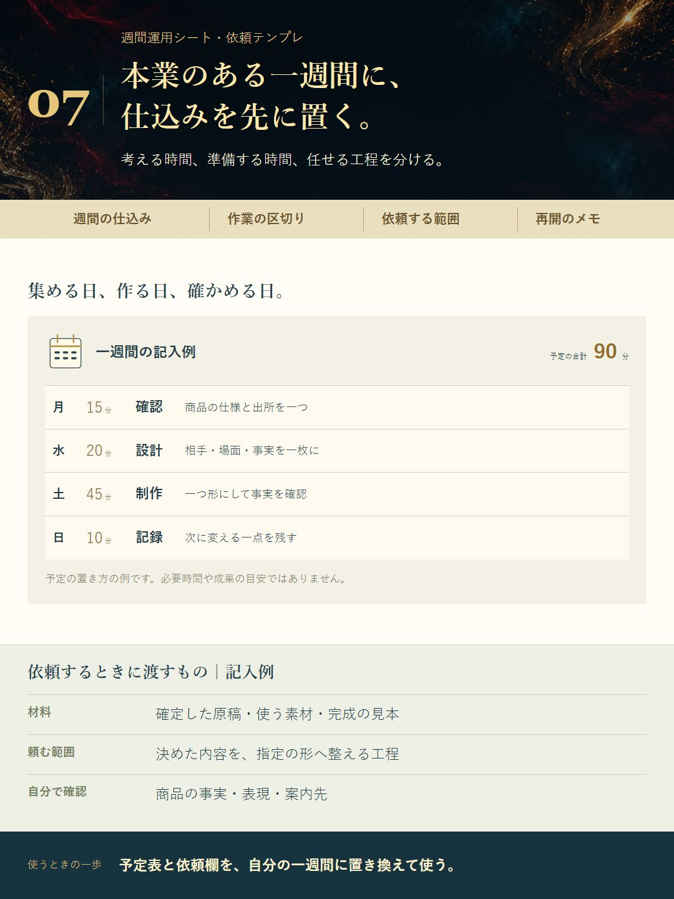
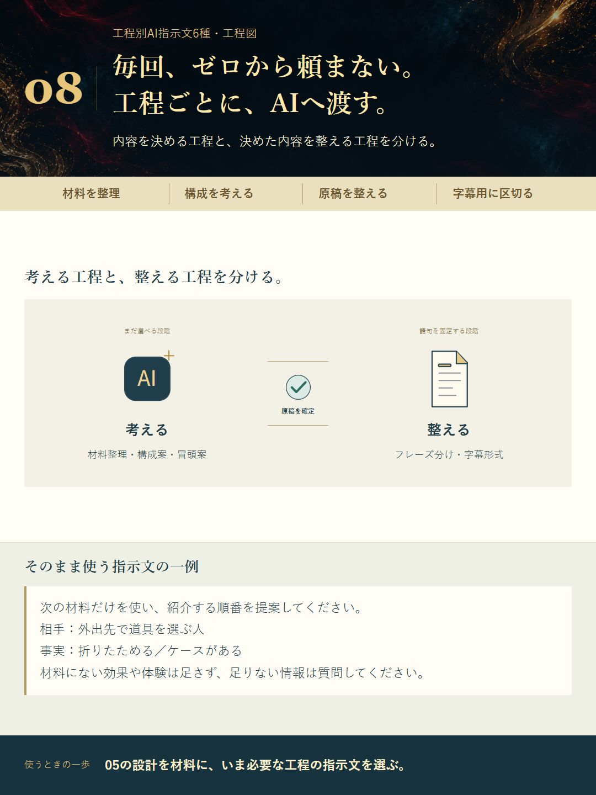
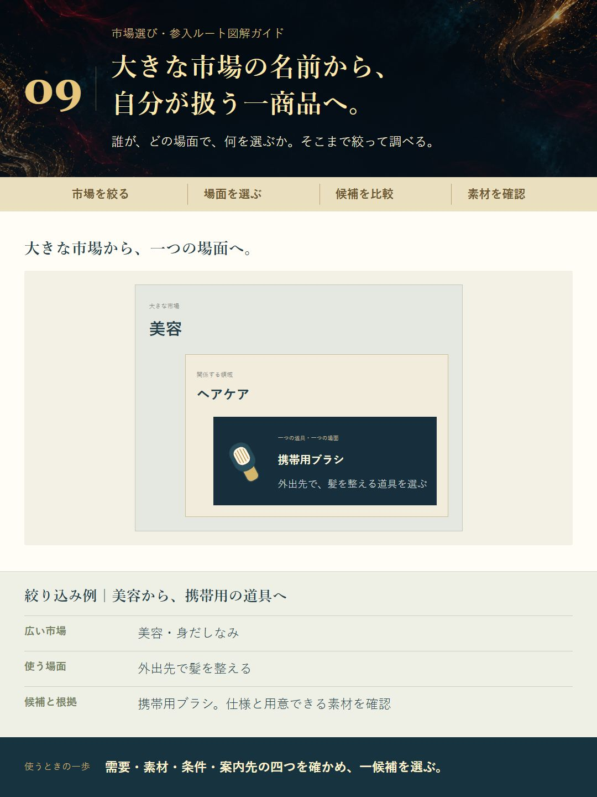
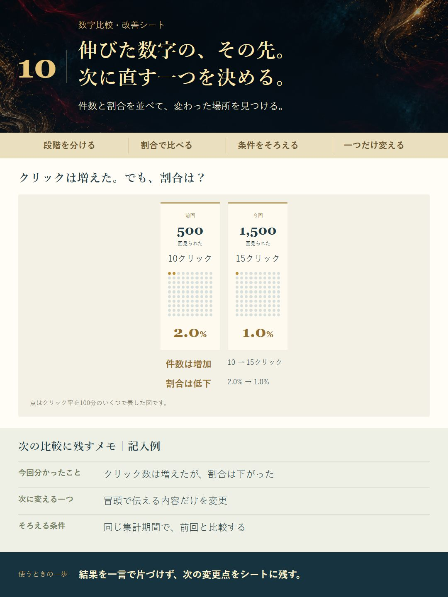

01
個別コンサル内で伝授
「驚愕手法」個別伝授

仕組みと自分の始め方を、個別で聞く機会。
大きく見る参加者限定
個別コンサル内で伝授

仕組みと自分の始め方を、個別で聞く機会。
大きく見る実践記録BOOK

会社員の実践記録を、図解と行動の例で読み解く資料。
大きく見る仕組み図解ガイド

商品代金と紹介報酬の流れ、AIと人の役割を図で理解するガイド。
大きく見る報酬のカラクリ解説BOOK

高単価報酬の条件と、発生・確定・費用の違いをつかむ資料。
大きく見る記入して使う収益化設計シート

記入例つきの設計シート。相手・場面・根拠から紹介の構成をつくる。
大きく見る初収益に向けた初動ロードマップ

一回目の実践までを、図解とチェック項目でたどれる道順。
大きく見る週間運用シート・依頼テンプレ

記入例つきの週間表と依頼文。限られた時間の作業を組み立てる。
大きく見る工程別AI指示文6種・工程図

作業の段階に合わせて選べる6つのAI指示文と、使う順番の図。
大きく見る市場選び・参入ルート図解ガイド

市場名だけで終わらず、商品・場面・素材まで絞るための資料。
大きく見る数字比較・改善シート

数字を入れて割合を比べ、次に試す変更点を一つ決めるシート。
大きく見る